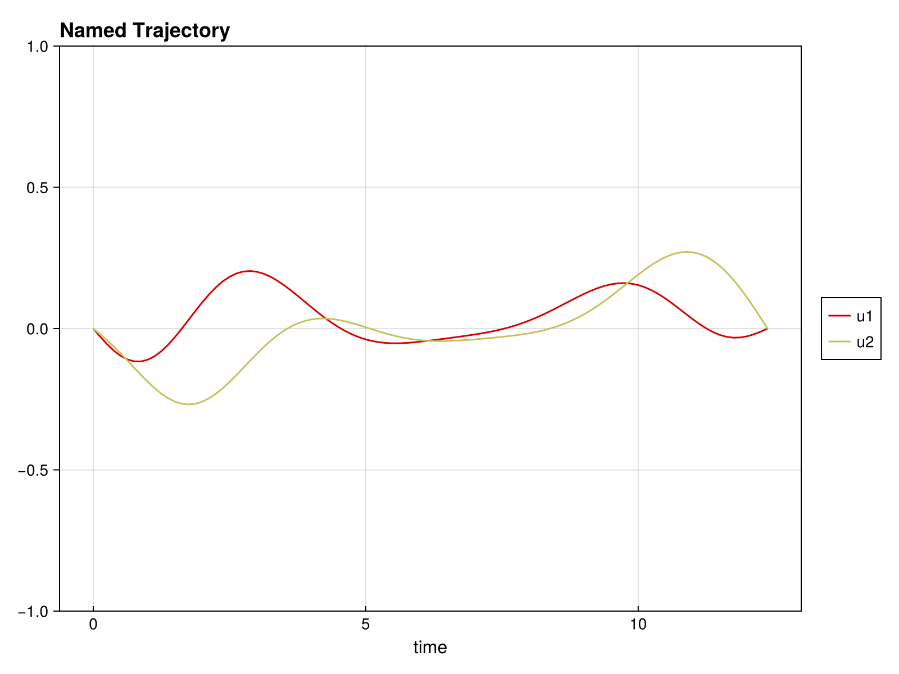
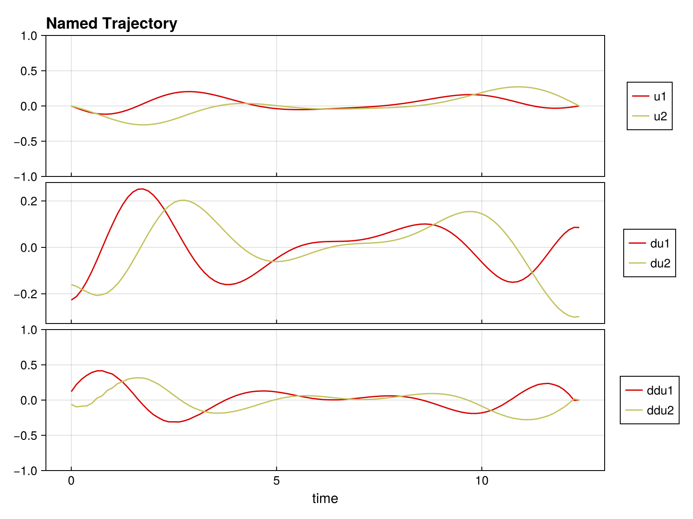
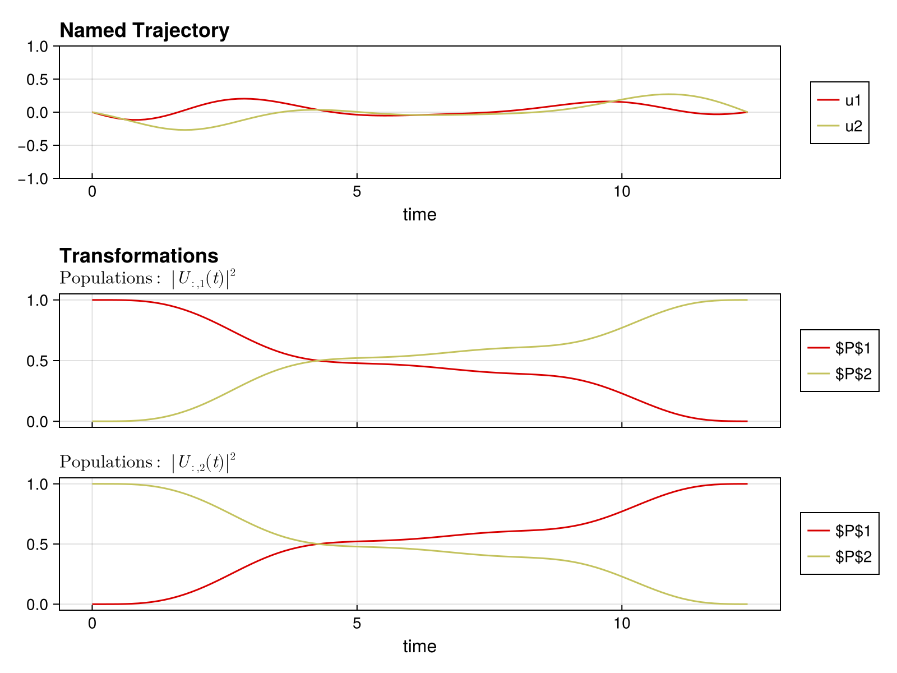
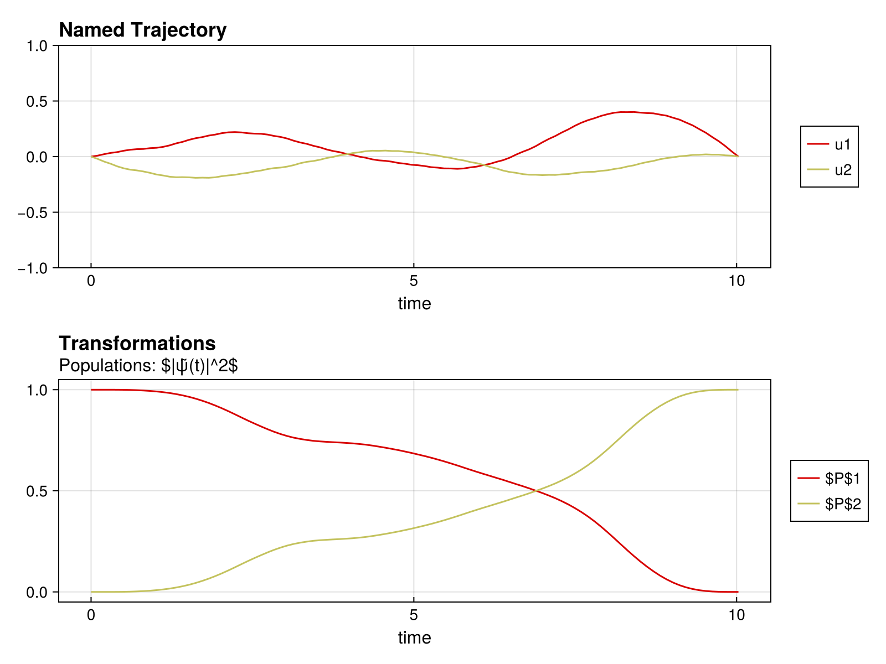
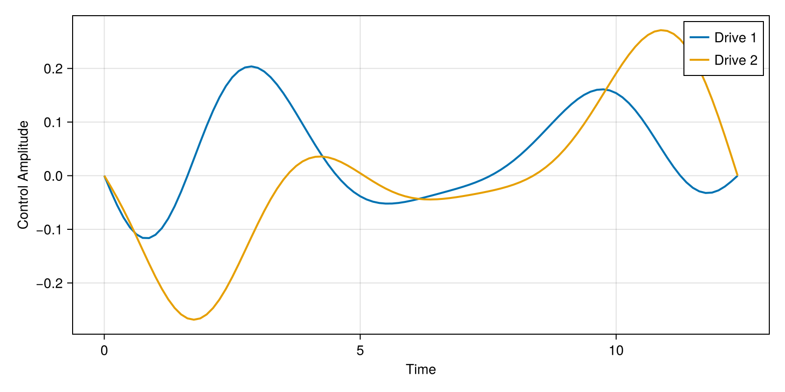
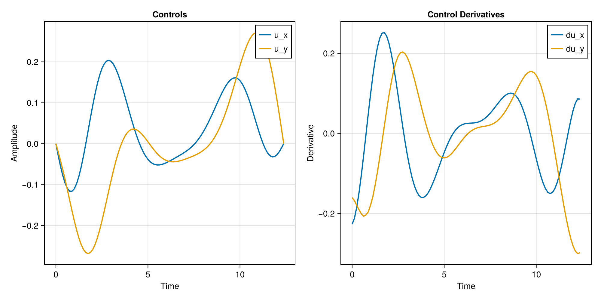
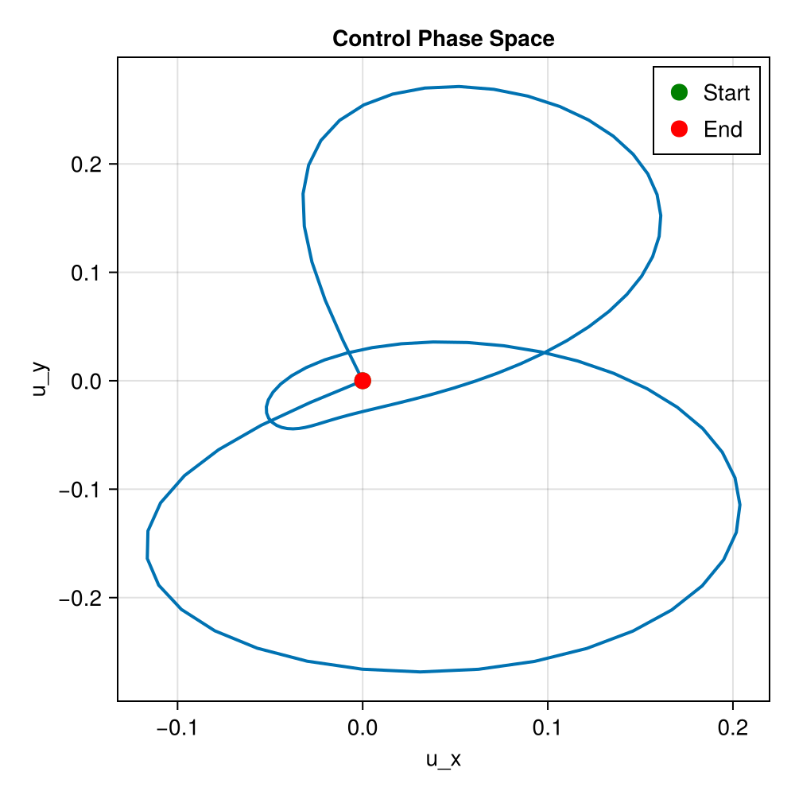
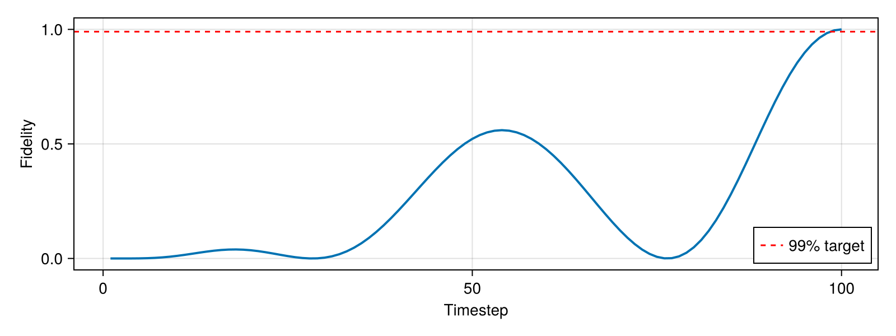
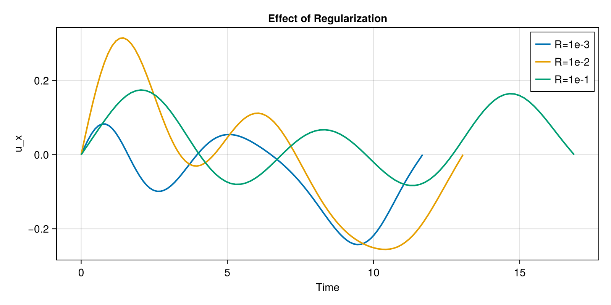
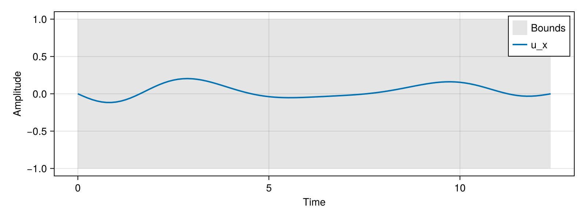

Visualization
Piccolo.jl provides visualization tools for analyzing optimization results. This guide covers plotting controls, states, and populations.
Setup
Visualization requires a Makie backend. We'll create a solved problem to work with:
using Piccolo
using CairoMakie
using Random
Random.seed!(42)
# Create and solve a simple qubit gate problem
H_drift = 0.5 * PAULIS[:Z]
H_drives = [PAULIS[:X], PAULIS[:Y]]
sys = QuantumSystem(H_drift, H_drives, [1.0, 1.0])
T = 10.0
N = 100
times = collect(range(0, T, length = N))
initial_controls = 0.1 * randn(2, N)
pulse = ZeroOrderPulse(initial_controls, times)
qtraj = UnitaryTrajectory(sys, pulse, GATES[:X])
qcp = SmoothPulseProblem(qtraj, N; Q = 100.0, R = 1e-2, ddu_bound = 1.0)
cached_solve!(qcp, "visualization_unitary"; max_iter = 50, verbose = false, print_level = 1)
fidelity(qcp)0.9999695284628932Basic Trajectory Plotting
The plot function from NamedTrajectories.jl plots trajectory components.
Plot Controls
traj = get_trajectory(qcp)
fig = plot(traj, [:u])
Plot Controls and Derivatives
fig = plot(traj, [:u, :du, :ddu])
Quantum-Specific Plots
Unitary Populations
For UnitaryTrajectory, visualize how state populations evolve during the gate:
fig = plot_unitary_populations(traj)
Ket State Populations
For KetTrajectory, use plot_state_populations:
ψ_init = ComplexF64[1.0, 0.0]
ψ_goal = ComplexF64[0.0, 1.0]
pulse_ket = ZeroOrderPulse(0.1 * randn(2, N), times)
qtraj_ket = KetTrajectory(sys, pulse_ket, ψ_init, ψ_goal)
qcp_ket = SmoothPulseProblem(qtraj_ket, N; Q = 100.0, R = 1e-2, ddu_bound = 1.0)
cached_solve!(qcp_ket, "visualization_ket"; max_iter = 50, verbose = false, print_level = 1)
traj_ket = get_trajectory(qcp_ket)
fig = plot_state_populations(traj_ket)
Custom Plotting
For full control, extract trajectory data and use Makie directly.
Manual Control Plots
plot_times = cumsum([0; get_timesteps(traj)])[1:(end-1)]
fig = Figure(size = (800, 400))
ax = Axis(fig[1, 1], xlabel = "Time", ylabel = "Control Amplitude")
for i = 1:size(traj[:u], 1)
lines!(ax, plot_times, traj[:u][i, :], label = "Drive $i", linewidth = 2)
end
axislegend(ax, position = :rt)
fig
Subplot Layouts
fig = Figure(size = (1000, 500))
# Controls
ax1 = Axis(fig[1, 1], xlabel = "Time", ylabel = "Amplitude", title = "Controls")
lines!(ax1, plot_times, traj[:u][1, :], label = "u_x", linewidth = 2)
lines!(ax1, plot_times, traj[:u][2, :], label = "u_y", linewidth = 2)
axislegend(ax1, position = :rt)
# Derivatives
ax2 = Axis(fig[1, 2], xlabel = "Time", ylabel = "Derivative", title = "Control Derivatives")
lines!(ax2, plot_times, traj[:du][1, :], label = "du_x", linewidth = 2)
lines!(ax2, plot_times, traj[:du][2, :], label = "du_y", linewidth = 2)
axislegend(ax2, position = :rt)
fig
Phase Space Plot
fig = Figure(size = (500, 500))
ax = Axis(fig[1, 1], xlabel = "u_x", ylabel = "u_y", title = "Control Phase Space")
lines!(ax, traj[:u][1, :], traj[:u][2, :], linewidth = 2)
scatter!(
ax,
[traj[:u][1, 1]],
[traj[:u][2, 1]],
color = :green,
markersize = 15,
label = "Start",
)
scatter!(
ax,
[traj[:u][1, end]],
[traj[:u][2, end]],
color = :red,
markersize = 15,
label = "End",
)
axislegend(ax, position = :rt)
fig
Fidelity Evolution
Track fidelity during the pulse:
using LinearAlgebra
U_goal = GATES[:X]
fidelities = Float64[]
for k = 1:size(traj[:Ũ⃗], 2)
U_k = iso_vec_to_operator(traj[:Ũ⃗][:, k])
F_k = abs(tr(U_goal' * U_k))^2 / sys.levels^2
push!(fidelities, F_k)
end
fig = Figure(size = (800, 300))
ax = Axis(fig[1, 1], xlabel = "Timestep", ylabel = "Fidelity")
lines!(ax, 1:length(fidelities), fidelities, linewidth = 2)
hlines!(ax, [0.99], color = :red, linestyle = :dash, label = "99% target")
axislegend(ax, position = :rb)
fig
Comparing Solutions
Compare solutions with different regularization weights:
fig = Figure(size = (800, 400))
ax = Axis(fig[1, 1], xlabel = "Time", ylabel = "u_x", title = "Effect of Regularization")
for (R, label) in [(1e-3, "R=1e-3"), (1e-2, "R=1e-2"), (1e-1, "R=1e-1")]
pulse_r = ZeroOrderPulse(0.1 * randn(2, N), times)
qtraj_r = UnitaryTrajectory(sys, pulse_r, GATES[:X])
qcp_r = SmoothPulseProblem(qtraj_r, N; Q = 100.0, R = R, ddu_bound = 1.0)
cached_solve!(
qcp_r,
"visualization_R_$(R)";
max_iter = 50,
verbose = false,
print_level = 1,
)
traj_r = get_trajectory(qcp_r)
t_r = cumsum([0; get_timesteps(traj_r)])[1:(end-1)]
lines!(ax, t_r, traj_r[:u][1, :], label = label, linewidth = 2)
end
axislegend(ax, position = :rt)
fig
Saving Figures
# PNG (raster)
# save("controls.png", fig)
# PDF (vector graphics)
# save("controls.pdf", fig)
# SVG (vector graphics)
# save("controls.svg", fig)Plotting Tips
1. Use Appropriate Resolution
For publications, use high-res settings:
fig_hires = Figure(size = (1200, 800), fontsize = 14)2. Use Consistent Colors
colors = Makie.wong_colors()" />
<path d="M1,0v1h-1z" fill="%230072B2" />
<path d="M0,0h1v1h-1z" fill="%230072B2" fill-opacity="1" />
<path d="M2,0v1h-1z" fill="%23E69F00" />
<path d="M1,0h1v1h-1z" fill="%23E69F00" fill-opacity="1" />
<path d="M3,0v1h-1z" fill="%23009E73" />
<path d="M2,0h1v1h-1z" fill="%23009E73" fill-opacity="1" />
<path d="M4,0v1h-1z" fill="%23CC79A7" />
<path d="M3,0h1v1h-1z" fill="%23CC79A7" fill-opacity="1" />
<path d="M5,0v1h-1z" fill="%2356B4E9" />
<path d="M4,0h1v1h-1z" fill="%2356B4E9" fill-opacity="1" />
<path d="M6,0v1h-1z" fill="%23D55E00" />
<path d="M5,0h1v1h-1z" fill="%23D55E00" fill-opacity="1" />
<path d="M7,0v1h-1z" fill="%23F0E442" />
<path d="M6,0h1v1h-1z" fill="%23F0E442" fill-opacity="1" />
</svg>)
3. Show Drive Bounds
bound = 1.0
fig = Figure(size = (800, 300))
ax = Axis(fig[1, 1], xlabel = "Time", ylabel = "Amplitude")
band!(
ax,
plot_times,
-bound * ones(length(plot_times)),
bound * ones(length(plot_times)),
color = (:gray, 0.2),
label = "Bounds",
)
lines!(ax, plot_times, traj[:u][1, :], label = "u_x", linewidth = 2)
axislegend(ax, position = :rt)
fig
See Also
- Visualizations API - Complete API reference
- Problem Templates - Generating solutions to plot
- Trajectories - Understanding trajectory structure
This page was generated using Literate.jl.